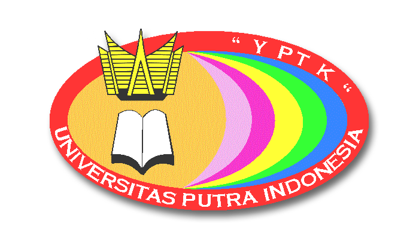

Selamat datang di Universitas Putra Indoneisa YPTK Padang,
Sebagai Kepala Sekolah, saya sangat senang menyambut Anda di situs profil kami.
SMP Satria Gatotkaca merupakan sekolah yang mempunyai visi
dan misi untuk menghasilkan peserta didik yang berkarakter, cerdas, kreatif dan berdaya saing.
Di SMP Satria Gatotkaca kami memahami bahwa pendidikan bukan hanya sekedar memberikan ilmu kepada siswa saja, namun
juga membantu mereka mengembangkan potensinya dan menciptakan suasana belajar yang menyenangkan.
Kami bertekad untuk menyediakan
pendidikan yang berkualitas dan komprehensif, melalui program pembelajaran yang inovatif dan menyenangkan.
SMP Satria Gatotkaca juga memiliki fasilitas yang memadai serta didukung oleh tenaga pendidik yang profesional dan berpengalaman.
Kami yakin dengan fasilitas dan sumber daya manusia yang baik maka siswa akan lebih termotivasi untuk belajar dan berkembang.
Kami berharap Anda mendapatkan informasi bermanfaat dan menarik melalui website profil kami. Jika Anda memiliki pertanyaan atau ingin mengetahui lebih lanjut tentang Universitas Putra Indoneisa YPTK Padang, jangan ragu untuk menghubungi kami.